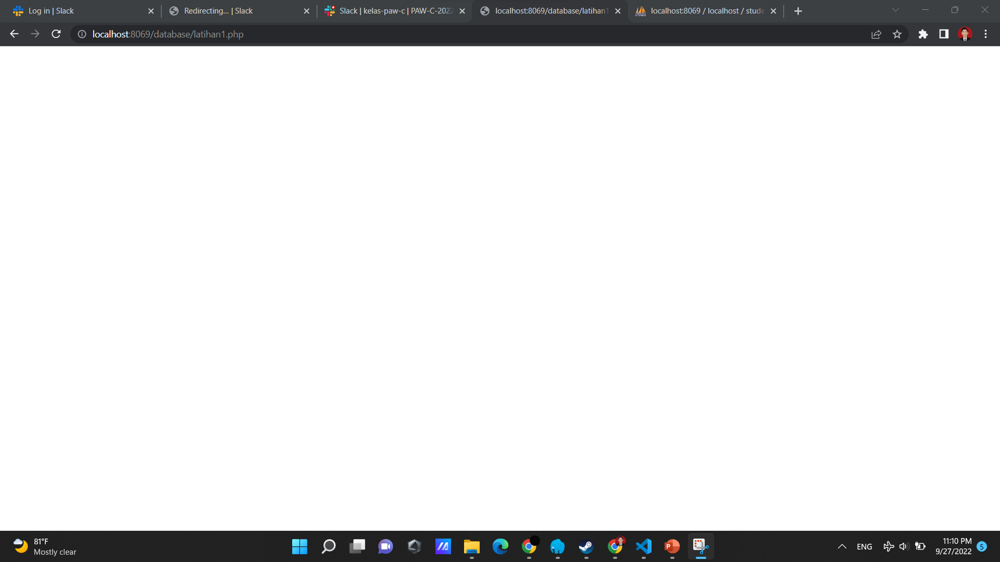

Koneksi Database

Kode program di atas merupakan kode program bahasa PHP untuk membuat objek baru yaitu PDO. interface universal yang disediakan PHP untuk “berkomunikasi” dengan database server. Maksud istilah “interface universal” disini adalah bahwa PDO tidak terikat dengan aplikasi database tertentu. Apabila saat ini kita menggunakan database MySQL dan dikemudian hari ingin bermigrasi menggunakan PostgreSQL, kita hanya tinggal mengganti cara pemanggilan awal PDO dan seluruh kode program yang ada bisa langsung digunakan untuk database baru. Contoh di atas merupakan implementasi PDO dengan database my MySQL. Dalam construct objek PDO, kita dapat melakukan input data yaitu host database yang kita miliki. Secara default, pada device kita memiliki dbhost yaitu localhost. Selanjutnya diikuti nama database yanng ingin dikoneksikan dengan catatan nama database yang diinputkan harus telah tersedia pada database MySQL. Untuk input selanjutnya diisi username serta password dari databaseyang kita miliki.

Gambar di atas merupakan cara untuk membuat databasebaru melalui PHPMyAdmin. Pada kode program sebelumnya, database yang kita inputkan bernama "library". Oleh karena itu supaya prohgram PHP tersebut tidak error ketika dijalankan, maka harus membuat database "library" terlebih dahulu. Ketika database "library" telah dibuat, langkah selanjutnya yaitu menjalankan kode program PHP sebelumnya. Apabila program PHP dan koneksi dengan database "library" sukses dilakukan, maka web browser dengan server lokal yang kita miliki akan menghasilkan output di bawah ini :

Kode program di atas merupakan kode program bahasa PHP untuk membuat objek baru yaitu PDO. interface universal yang disediakan PHP untuk “berkomunikasi” dengan database server. Maksud istilah “interface universal” disini adalah bahwa PDO tidak terikat dengan aplikasi database tertentu. Apabila saat ini kita menggunakan database MySQL dan dikemudian hari ingin bermigrasi menggunakan PostgreSQL, kita hanya tinggal mengganti cara pemanggilan awal PDO dan seluruh kode program yang ada bisa langsung digunakan untuk database baru. Contoh di atas merupakan implementasi PDO dengan database my MySQL. Dalam construct objek PDO, kita dapat melakukan input data yaitu host database yang kita miliki. Secara default, pada device kita memiliki dbhost yaitu localhost. Selanjutnya diikuti nama database yanng ingin dikoneksikan dengan catatan nama database yang diinputkan harus telah tersedia pada database MySQL. Untuk input selanjutnya diisi username serta password dari databaseyang kita miliki.
Kode program diatas bertujuan untuk menangkap kesalahan eror pada kode program yang telah dibuat sebelumnya.Pada kode program sebelumnya, database yang kita inputkan bernama "library". Oleh karena itu supaya prohgram PHP tersebut tidak error ketika dijalankan, maka harus membuat database "library" terlebih dahulu. Ketika database "library" telah dibuat, langkah selanjutnya yaitu menjalankan kode program PHP sebelumnya. Apabila program PHP dan koneksi dengan database "library" sukses dilakukan, maka web browser dengan server lokal yang kita miliki akan menghasilkan output di bawah ini :